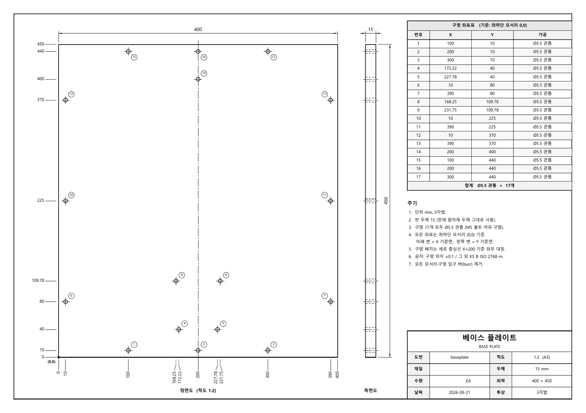

Maknae is a small mobile robot for older adults with limited mobility. It carries bags on outings, fetches items around the house, and tells family members when an outing starts or an SOS is triggered.
On June 3, 2026, I started with ₩1 million saved from work as a physics teaching assistant. Over six months I built the chassis, electronics, firmware, ROS 2 stack, arm, Android app, caregiver dashboard, and 3D avatar. The parts receipts came to ₩1,496,996.
My grandmother rarely called first
My grandmother lived on her own. I grew up hearing that I should call her more often, but when life got busy, both my father and I put off those calls. A Bodyfriend ad showed a son calling his mother after getting a notification that she had switched on her massage chair. A habit she already had gave him a reason to check in.
I wondered what else could fit into her routine. A robot could carry her groceries while she used her usual walking aid, bring small things within reach at home, and share an update with her family when she headed out.
Gaps in care
18.6%
Share of older adults in South Korea reporting a functional limitation. Of that group, 47.2% received care. 2023 Survey of Older Persons
Pulling a cart takes a hand the walker may need for balance. Loading a cart can also move its center of mass forward and up. With Maknae, the walker keeps using their own cane or walker, and the robot carries the load and follows. At home, the arm handles short errands for things like water, medication, or glasses.
What Maknae does
In Korean, maknae means the youngest member of the family. It also stands for Mobile Assistant for Kin’s Needs And Errands. The 450 × 400 × 368 mm aluminum chassis carries an SO-101 arm and a one-meter overhead camera mast. Two spring-loaded drive wheels and three casters keep the base in contact with the floor.
Fetching a pill case
In this illustrated scenario, Grandma asks from her seat. Maknae drives to the desk, aligns with a marker, finds the pill case with its overhead camera, and brings it back. The gripper waits for her to say “hand it to me.”
Taking the groceries home
Starting a trip sends a notification to the family. Maknae carries the load and follows a printed marker on the bag. It stops if the marker leaves view. After ten seconds without reacquiring it, the system raises an SOS. The phone’s location is shared during the active SOS and deleted when the alert is cleared.
What the operator and family can see
The development console shows the marker’s distance and bearing, wheel speeds, the lidar scan, the planned Nav2 route, and the overhead camera used by the arm. The older adult’s Android app uses large tiles for outings and SOS. The caregiver dashboard displays trip updates and active alerts.
The following, mapping, and arm tabs.
A voice and a face
ElevenLabs Agents turns a spoken Korean request into a tool call. The on-screen avatar uses three-vrm to render facial expressions and moves its mouth with the audio.
Trying it on the physical robot
The first clip shows an autonomous grasp. Maknae hears a request, finds a roll of clear tape on a knee, lifts it, and hands it over after a second voice command. I drove the robot remotely for the full fridge-to-bed route in the second clip. The remaining integration work is to make docking accurate enough for the arm to take over reliably. At an exhibition booth I also tested ArUco following and SOS delivery to both a phone and a tablet.
Autonomous grasp and handover.
Teleoperated fridge-to-bed route.
Marker following with a live digital twin.
Loss of tracking triggers an SOS on both devices.
Six months at the workbench
A wire cart, two motors, and a small screen
I drilled mounting holes in a wire cart and bolted on two encoder motors. The ESP32-S3 ran a 50 Hz control loop, and its TFT screen showed the target and measured wheel speeds while I walked alongside it. The encoder readings agreed, yet the chassis drifted 40 cm over 87.8 cm of forward travel. The wire base flexed and the wheels lost traction. For the SO-101 arm I used a USB-C PD trigger and a buck converter to get 12 V from a power bank for ₩9,853.
From a proof of concept to a chassis
I tested ArUco alignment and grasp sequencing in Gazebo while getting the physical prototype to follow a marker. On July 31 the wheel, hub, and hinge order took the balance below zero. The next chassis used 2020 aluminum extrusion and spring-loaded drive wheels to keep both wheels on the floor.
Deterministic timing and an expensive wiring lesson
I moved wheel control to an STM32F446RE with static FreeRTOS. A hardware timer drives the 100 Hz loop, dedicated timers read the encoders, and micro-ROS carries commands and telemetry to the Raspberry Pi over UART. An overcurrent incident cost ₩41,091 in replacement parts and led to a fused supply and a dedicated interface board.
I also tested ACT on 70 recorded demonstrations. It struggled with unfamiliar objects and lighting, so I gave the vision model a smaller job. It identifies the object and returns a point, while the arm code computes the motion.
KiCad, perfboard, and a phone for GPS
Vibration broke contacts on the breadboard. I drew the Rev B interface board in KiCad and soldered it on perfboard. I designed a 400 × 450 × 15 mm plywood top plate with 17 mounting holes and had it cut on a CNC router. For location sharing I used the existing Android phone instead of adding a separate GNSS modem and data plan.

CNC drawing for the top plate.
Mounting the arm and starting from battery power
The SO-101, power bank, and one-meter mast went on the top plate. I calibrated the Logitech C270 overhead camera with 26 checkerboard views and measured a reprojection error of 0.11 px. When the controller booted only with USB connected, I traced it to the external clock arriving after the startup timeout. Extending the clock wait fixed standalone startup.
Buying lidar and getting the pose right
On November 6, I bought an RPLIDAR C1 for ₩99,000. That brought the remaining balance to −₩496,996. I moved from four corner casters to three, leaving two sprung drive wheels and five floor contact points. An extended Kalman filter combined wheel speed and gyro data. On a 720° turn in place, the heading error fell from 90.3° to 3.7°.
Maknae built a 5 cm occupancy map on the physical robot with the lidar and slam_toolbox. I exercised map-based routes through Nav2 in Gazebo, with A* for planning and Regulated Pure Pursuit for path following. The final tests included the clear-tape grasp and an avatar gesture synchronized with the arm.
Inside the robot
Layer
Job
Chassis and power
Aluminum extrusion, five-point suspension, Rev B interface board, LiFePO₄ battery, separate power for the arm.
STM32 firmware
100 Hz wheel speed control, encoder and IMU sampling, a command timeout, and a separate hardware watchdog.
ROS 2 on Pi 5
EKF, 2D SLAM, Nav2, twist_mux, and the outing and SOS state machine.
Large-tile Android controls, a read-only caregiver dashboard, web push, and voice requests.
Who can move the robot?
Manual input, marker following, errands, and Nav2 send separate velocity commands. twist_mux picks the highest-priority active input, and a stop lock can override them all. The MCU still enforces its own command timeout and independent watchdog.
How a pixel becomes a grasp
The C270 overhead camera measures the work surface using seven frames of an 8 cm marker. The vision model points to the item and reports whether a hand overlaps it. The code estimates the gripper orientation, solves inverse kinematics, and compensates for 5–9 mm of arm sag. The state machine only permits opening the gripper at the corresponding release step.
What it cost
One developer, six months, seven Git repositories, and 543 photos and videos. I counted the parts purchases from 26 purchase records and six MISUMI delivery notes. I reused the wire cart, ESP32, webcam, and power bank I already had.
Date
Purchase
KRW
Jun 4
Encoder motors, 5 V buck converter, emergency stop, and switch
51,221
Jun 5
Raspberry Pi 5, battery, charger, and driver
487,432
Jun 20
SO-ARM101 Pro, PD trigger, and 12 V buck converter
401,271
Jul 2
NUCLEO-F446RE
39,600
Jul 31
Wheels, hubs, hinges, and bolts
77,880
Aug 3
Extrusion, brackets, springs, and casters
144,892
Aug 20
IMU, MCU supply, fuses, and wire
34,333
Aug 30
Replacement driver and motors
41,091
Sep 22
Machined extrusion, JST cables, and overhead camera
75,470
Oct 1
Frame reinforcement hardware
44,806
Nov 6
RPLIDAR C1
99,000
Total spent on parts
₩1,496,996
Balance from ₩1,000,000
−₩496,996
For scale, Hello Robot lists its Stretch 4 research platform at $29,950, roughly ₩40 million. Maknae’s parts spending was about one twenty-seventh of that list price. Hello Robot pricing
Next year
Three purchases are still on my list. An RGB-D camera would simplify the marker-based geometry. A fabricated PCB would replace a long night of hand soldering. A GPS and LTE module would give the robot an independent connection when it needs one.
Picking up a remote in Gazebo
I typed a request for the remote on the desk. The physical robot’s ROS 2 nodes ran the route, aligned to the marker, found the object using the simulated overhead camera, and controlled the arm on the way out and back. Gazebo supplies the home, sensors, and actuators. A simulated joint holds the object once it is between the gripper fingers.
Recorded ROS 2 and Gazebo run, from the typed request to handover.